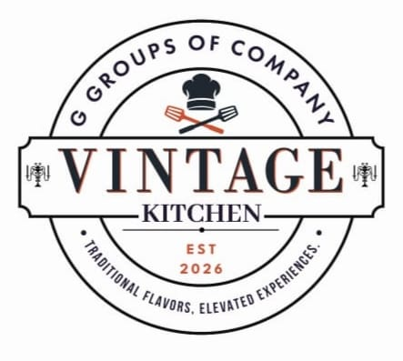

Est. 2026
Vintage Kitchen serves authentic home-style cuisine that brings families together. Our recipes have been passed down through generations, combining traditional cooking techniques with fresh, locally sourced ingredients.
Every dish tells a story, and every meal is a celebration of flavor, warmth, and hospitality. We are committed to creating memorable dining experiences for every guest.
Siruvani Main Road,
Near Kalampalayam Bus Stop,
Coimbatore, Tamil Nadu 641010,
India
Monday - Sunday
11:00 AM - 11:00 PM
Phone: +91 86676 04259
Email: gokulgokul123@gmail.com